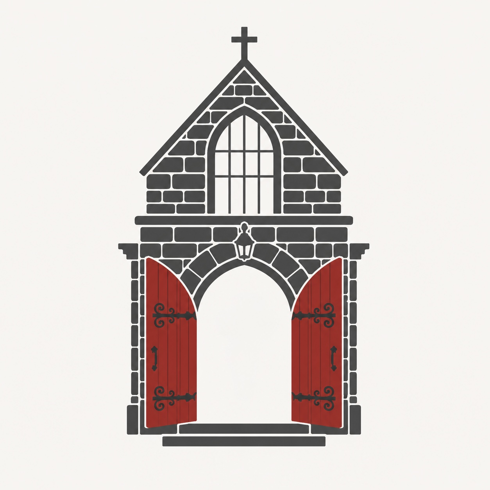

Serving at the threshold
Five sessions. One Sunday at a time.
St. John's Episcopal Church
Mission Statement
At St. John's Episcopal Church of Youngstown, we celebrate God and the transforming love of Jesus Christ. Rooted in scripture, practice and reason, we evolve as disciples, build compassionate relationships, and serve others with love. We strive to be a welcoming and caring space for everyone, reflecting the inherent dignity of all, and we nurture unity in the Body of Christ by fostering spiritual growth, hope and renewal as we answer Christ's call to embody His love and grace in our community.
Who we are
Founded in the 1850s, St. John's has been a faithful presence in downtown Youngstown for over 170 years. Located at 323 Wick Ave on the city's arts corridor, the parish is home to Tiffany stained-glass windows, the annual Boar's Head Festival, the Red Door Food Pantry and Café, and partnerships with Youngstown State University and neighboring faith communities. St. John's affirms and welcomes LGBTQ+ persons and is committed to reflecting the inherent dignity of all.
Where we are right now
St. John's is in a season of transition, currently without a settled rector. Lay leadership has carried the parish through two years of honest conversation, healing, and renewed hope. Average weekly attendance is around 67, with Christmas and Easter drawing over 170. The parish is actively searching for a priest-in-charge who will honor and strengthen this lay-led momentum.
Why this module exists
Usher training at most parishes is a single orientation and a handshake. This module treats the role as what it actually is — a ministry with real skill, real judgment, and real formation involved. Five sessions, grounded in how adults actually learn, built specifically for St. John's in this moment.
How to use it
Work through one session per week alongside your actual service. Read before Sunday. Reflect after. The scenarios don't have single correct answers — that's intentional.
Pedagogical approach
A Ministry of Hospitality
Heavenly Father, you sent your Son as a model for hospitality. Prepare my heart to welcome all who walk through our doors today. Give me eyes to see the needs of your people, grace to respond with patience, and a joyful spirit that reflects your love. May the stranger feel at home, and the weary find peace. I ask this through Jesus Christ our Lord. Amen.
Version
St. John's Episcopal Church · Youngstown, OH · 2025
Review annually as a team. Update when the parish changes.